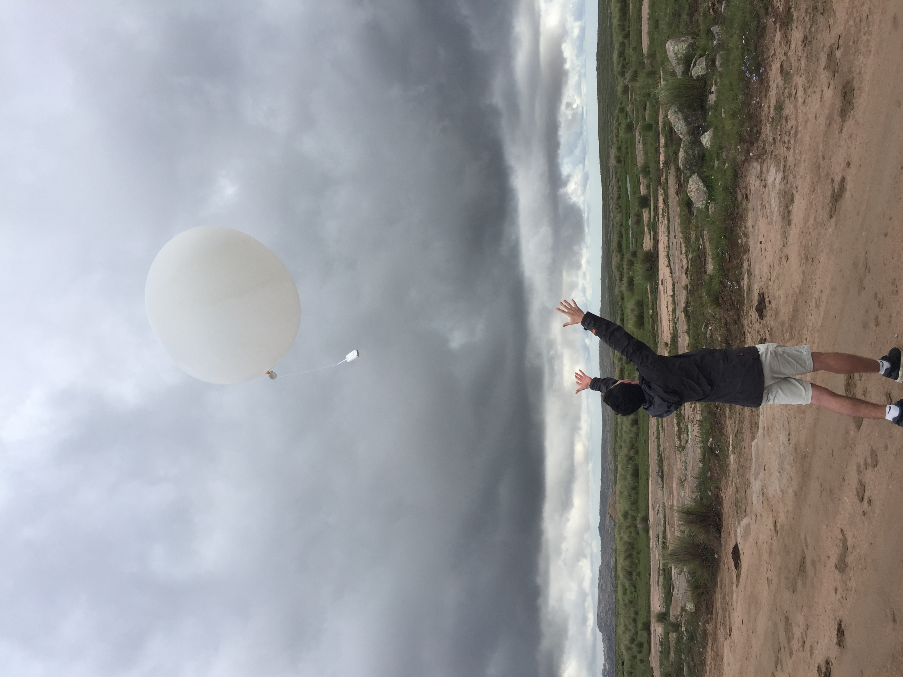
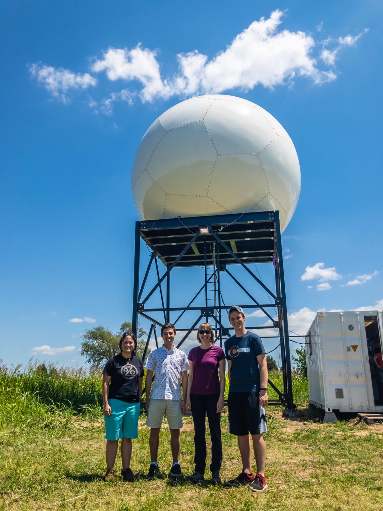
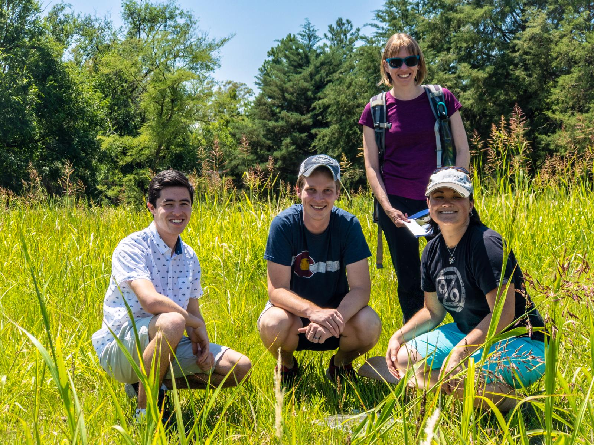
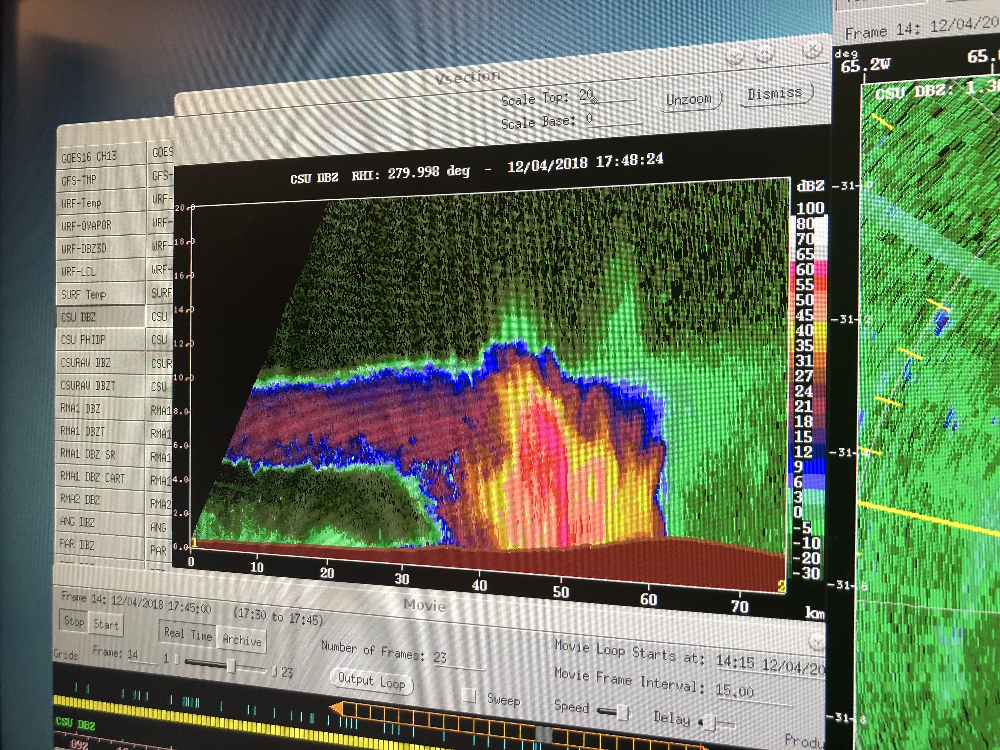

Hobbies
Field Work in Villa Carlos Paz, Argentina
In December 2018 I participated in the RELAMPAGO field campaign studying the lifecycle of convective storms Central Argentina!




Sailing!
I caught the sailing bug at a young age and get out when I can (unfortunately not ofte anymore). I learned to sail at the age of 10 at a small county park and somehow was featured in the newspaper. Competed during the summers before being recruited to the Cornell Sailing Team. Taught sailing for a couple summers in college.


Outdoor adventures!
Olympic National Park, Joshua Tree, Apple Orchards (w/my partner Kayla and dog Sailor), Aurora at Lake Wenatchee, Wallace Falls, ... (left -> right & top -> bottom)


Volunteering with Habitat for Humanity
A great cause and a lot of fun.


Cooking and eating!
What is not to love?